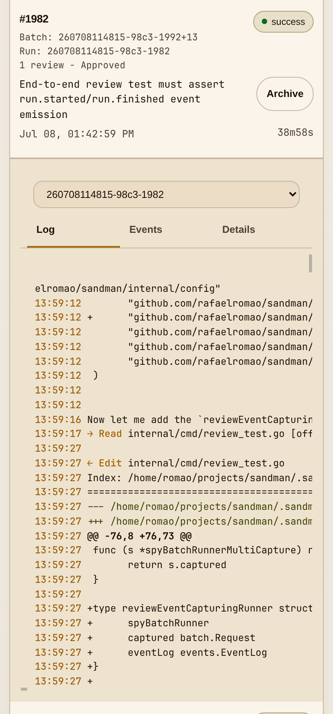

Specification
Clear intent and checks
A spec, SDD flow, or bug brief produces a well-described GitHub issue. Sandman only needs the work to be precise enough to run.
 SANDMAN
SANDMAN

Sandman turns one clear GitHub issue into an autonomous delivery loop. It plans the implementation, runs the agent in an isolated environment, stores progress in task.md, drives review, and merges the PR when the gates pass.
A spec, SDD flow, or bug brief produces a well-described GitHub issue. Sandman only needs the work to be precise enough to run.
SANDMANtask.mdMerge lands on a reference branch. Run smoke, e2e, and QA before promoting to production, just like fast human work.
Sandman can run while you sleep when the issue has crisp intent, bounded scope, and visible checks.
Sandman is a CLI application. Portal is a visualization layer for current runs, queued issues, blockers, review state, logs, and merge readiness.
You do not babysit the agent, but you can inspect the loop at any time.
sandman main ? ❯ ./sandman run 2042: [260708175122-5395-2042] 17:51:39 [260708175122-5395-2042] 17:51:39 > build · MiniMax-M3 [260708175122-5395-2042] 17:51:39 [260708175122-5395-2045] 17:51:39 [260708175122-5395-2045] 17:51:39 > build · MiniMax-M3 [260708175122-5395-2045] 17:51:39 [260708175122-5395-2045] 17:51:40 [260708175122-5395-2043] 17:51:40 > build · MiniMax-M3 [260708175122-5395-2043] 17:51:40 [260708175122-5395-2045] 17:51:42 I'll start by loading the sandman skill and following the mandatory execution contract. [260708175122-5395-2045] 17:51:42 [260708175122-5395-2045] 17:51:42 → Skill "sandman" [260708175122-5395-2042] 17:51:42 I'll start by loading the sandman skill and checking the current state of the worktree. [260708175122-5395-2042] 17:51:42
task.md, events, logs, PRs, and review state remain inspectable after the agent stops.
Rendered task, progress notes, and the continuation point for sandman run 1234 --continue.
Agent output, targeted checks, repair loops, and review responses.
Code diff, review thread, green CI, merge decision, and linked issue.
Active, queued, reviewing, merged, or needs validation, projected from events.
Treat agent output the way you treat fast human output: the loop can merge to a reference branch, but release confidence comes from recurring validation across changes.
TDD is not an AI novelty. It is a traditional control that helps agents work in smaller, safer loops. Keep it, then add broader validation where risk demands it.
The reference branch Sandman merges into should be a branch you can validate, not a direct production promotion.
Today Sandman integrates with GitHub for source control and issues, and OpenCode as the implementation agent. That boundary may broaden over time, but the durable idea is the same: workflow-agnostic AFK delivery.
Use the upstream method that produces the clearest issues. Sandman should lead the story because it owns the autonomous path from selected issue to reviewed, merged PR.
| Layer | Precise role | Relationship to Sandman |
|---|---|---|
| Matt Pocock workflow | grill-with-docs/wayfinder->to-spec->to-tickets->Sandman->Validation.Plus diagnosing-bugs, improve-codebase-architecture and others. | Use the skills to resolve uncertainty, publish the spec, and slice GitHub tickets. Sandman runs the ready ticket frontier AFK. |
| Spec-Driven Development | Executable specifications become the source of truth that tasks are derived from, for example GitHub Spec Kit or Kiro specs. | Optional upstream source of agent-ready issues. Sandman does not need to own the spec layer. |
The handoff stays stable regardless of method: Specification -> Sandman -> Validation.
Sandman uses OpenCode as implementation agent.
Sandman live-mounts the host OpenCode database, so runs created by Sandman remain visible as native OpenCode sessions.
Use Portal for delivery state: run status, logs, review gates, and merge readiness. Use OpenCode for the agent transcript when you need to inspect what the model saw or did.
Sandman Review is the local review module for PR feedback. It follows the same idea as OpenCode's GitHub /oc integration: a PR comment triggers agent work. In Sandman, the trigger is /sandman review and the review runs locally.
Sandman Review listens for review request comments in repository PRs, reviews it, and posts feedback requesting changes or approving.
The implementation agent builds and self-reviews first. Sandman Review then handles feedback, repair, green checks, and merge readiness as part of the gate.
Sandman is the operational delivery layer. SDD is the upstream specification layer; GitHub's Spec Kit article is the clearest reference. Loop Engineering is the broader discipline of designing agent loops; Addy Osmani's Loop Engineering article is the reference.
SDD helps teams describe the work. Sandman helps teams leave the keyboard while the described work gets implemented, reviewed, and merged.
Loop Engineering frames the management system around agentic work. Sandman applies those principles to one concrete loop: CLI-owned AFK delivery from GitHub issue to merged PR.
Careful wording matters. Sandman is not all of Loop Engineering; it is a concrete loop inside that discipline.
Sandman makes AFK coding operational: explicit input, isolated environment, durable progress, review gates, merge discipline, and a clear post-merge validation step.